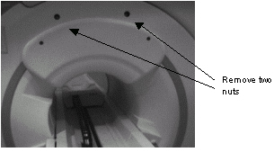
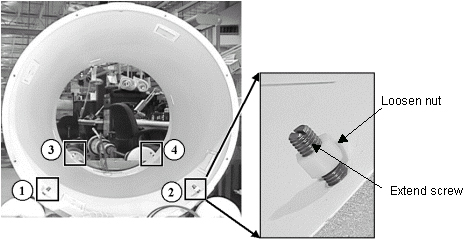

Operating Documentation
Direction 5133330-3, Rev# 14
Signa EXCITE HD 3.0T Service Methods
Module Version 1.0, Version Date 5/3/07
Operating Documentation |
| Required Persons | Preliminary Reqs | Procedure | Finalization |
|---|---|---|---|
| 1 |
Procedures for removing the rear end bell.
| NOTE: | If you are replacing the Rear End Bell the gradient cables must be cut. They must be re-crimped and re-terminated. |
| Item | Qty | Effectivity | Part# | Manufacturer | |
|---|---|---|---|---|---|
| Compression splicer | 12 | - | 2218149 | - | |
| Cold Shrink | 12 | - | 2218148 | - | |
| Gradient cable crimp tool | 1 | - | 2135776 | - | |
| Heavy duty cutters for gradient cables | 1 | - | - | - | |
Remove the front section of the bridge. Rear section can remain attached on the rear pedestal. See .
Lock out and tag out circuit breaker MR1 A14 CB6 at rear of RF/Pen Cabinet (MR1) on magnet enclosure power supply (MEPS) module.
For RF/Pen II and RF/PDU Cabinet: Lock out and tag out circuit breaker MR1 A20 CB4 at rear of RF/Pen II and RF/PDU Cabinet on System Support Module (SSM). (Refer to .)
Verify that voltage between MR1 A14 TP4 (+) and TP13 (–) is 0 Vdc.
For RF/Pen II and RF/PDU Cabinet, verify that voltage between MR1 A20 TP4 (+) (SRI+24V) and TP13 (–) (SRI RTN) is 0 Vdc.
Disconnect the microphone cable from the intercom board located on rear pedestal. See Illustration 1. The comfort module must be removed to replace the rear end bell.
Illustration 1: REAR COVERS

Unclip the light source at the lower right section of the magnet. See Illustration 2.
Route the cable that runs from the light source up to the comfort module, as this cable will remain connected to the patient lights during the rear end bell replacement process.
Illustration 2: LIGHT SOURCE

Remove the comfort module by removing the two nuts at the top and the clips on the end bell. See Illustration 3. Disconnect the speaker cable that’s inside of the comfort module. The light source cable will stay with the lights, which are attached to the RF coil.
Illustration 3: COMFORT MODULE

Slide rear pedestal back 2 feet.
Extend the RF Tube feet down all the way at the rear end bell by loosening the nut, and then extending the screws. The screws should be extended until the foot touches the TRM coil. See Illustration 4.
Illustration 4: COIL FEET EXTENSION

Disconnect the vacuum hose at the rear end bell. See Illustration 5.
Illustration 5: REAR END BELL

If you are replacing the end bell or removing the gradient coil, cut the 12 Gradient cables at the magnet room terminal block. Disconnect the optional resistive shim cable if necessary.
Remove the 32 screws from the Gradient Vacuum seal fixture. See Illustration 6. Slide the cover plate back.
Illustration 6: GRADIENT VACUUM SEAL FIXTURE

Remove the 8 nuts that secure the rear end bell to the RF Coil. See Illustration 7.
Illustration 7: REAR END BELL

Use an 8 mm allen wrench to remove the 24 M10 bolts that secure the rear end bell to the magnet.
Carefully pull the rear end bell back.
No finalization steps.